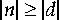
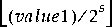

..., result.word1, result.word2
..., result.word1, result.word2| Contents | Prev | Next | Index | The JavaTM Virtual Machine Specification |
long to double| l2d |
Stack
..., value.word1, value.word2 ..., result.word1, result.word2
Description
The value on the top of the operand stack must be of type long. It is popped from the operand stack and converted to a double result using IEEE 754 round-to-nearest mode. The result is pushed onto the operand stack.
Notes
The l2d instruction performs a widening primitive conversion (§2.6.2) that may lose precision because type double has only 53 mantissa bits.
long to float| l2f |
Stack
..., value.word1, value.word2 ..., result
Description
The value on the top of the operand stack must be of type long. It is popped from the operand stack and converted to a float result using IEEE 754 round-to-nearest mode. The result is pushed onto the operand stack.
Notes
The l2f instruction performs a widening primitive conversion (§2.6.2) that may lose precision because type float has only 24 mantissa bits.
long to int| l2i |
Stack
..., value.word1, value.word2 ..., result
Description
The value on the top of the operand stack must be of type long. It is popped from the operand stack and converted to an int result by taking the low-order 32 bits of the long value and discarding the high-order 32 bits. The result is pushed onto the operand stack.
Notes The l2i instruction performs a narrowing primitive conversion (§2.6.3). It may lose information about the overall magnitude of value. The result may also not have the same sign as value.
long| ladd |
Stack
..., value1.word1, value1.word2, value2.word1, value2.word2 ..., result.word1, result.word2
Description
Both value1 and value2 must be of type long. The values are popped from the operand stack. The long result is value1 + value2. The result is pushed onto the operand stack.
If a long addition overflows, then the result is the low-order bits of the mathematical sum as represented by a long. If overflow occurs, then the sign of the result will not be the same as the sign of the mathematical sum of the two values.
long from array| laload |
Stack
..., arrayref, index ..., value.word1, value.word2
Description
The arrayref must be of type reference and must refer to an array whose components are of type long. The index must be of type int. Both arrayref and index are popped from the operand stack. The long value in the component of the array at index is retrieved and pushed onto the top of the operand stack.
Runtime Exceptions
If arrayref is null, laload throws a NullPointerException.
Otherwise, if index is not within the bounds of the array referenced by arrayref, the laload instruction throws an ArrayIndexOutOfBoundsException.
long| land |
Stack
..., value1.word1, value1.word2, value2.word1, value2.word2 ..., result.word1, result.word2
Description
Both value1 and value2 must both be of type long. They are popped from the operand stack. A long result is calculated by taking the bitwise AND of value1 and value2. The result is pushed onto the operand stack.
long array| lastore |
Stack
..., arrayref, index, value.word1, value.word2 ...
Description
The arrayref must be of type reference and must refer to an array whose components are of type long. The index must be of type int and value must be of type long. The arrayref, index, and value are popped from the operand stack. The long value is stored as the component of the array indexed by index.
Runtime Exceptions
If arrayref is null, lastore throws a NullPointerException.
Otherwise, if index is not within the bounds of the array referenced by arrayref, the lastore instruction throws an ArrayIndexOutOfBoundsException.
long| lcmp |
Stack
..., value1.word1, value1.word2, value2.word1, value2.word1 ..., result
Description
Both value1 and value2 must be of type long. They are both popped from the operand stack, and a signed integer comparison is performed. If value1 is greater than value2, the int value 1 is pushed onto the operand stack. If value1 is equal to value2, the int value 0 is pushed onto the operand stack. If value1 is less than value2, the int value -1 is pushed onto the operand stack.
long constant| lconst_<l> |
Stack
... ..., <l>.word1, <l>.word2
Description
Push the long constant <l> (0 or 1) onto the operand stack.
| ldc | |
| index |
Description
The index is an unsigned byte that must be a valid index into the constant pool of the current class (§3.6). The constant pool entry at index must be a CONSTANT_Integer (§4.4.4), CONSTANT_Float (§4.4.4), or CONSTANT_String (§4.4.3). The constant pool entry is resolved (§5.4, §5.5). If the entry is a CONSTANT_Integer or CONSTANT_Float, it must contain a numeric item which is pushed onto the operand stack as an int or float, respectively.
If the entry at index is a CONSTANT_String, it must contain a CONSTANT_Utf8 (§4.4.7) string. An instance of class String is created and initialized to the CONSTANT_Utf8 string. The item, a reference to the instance, is pushed onto the operand stack.
Linking Exceptions
During resolution of a CONSTANT_String constant pool item, any of the exceptions documented in §5.4 can be thrown.
| ldc_w | |
| indexbyte1 | |
| indexbyte2 |
Description
The unsigned indexbyte1 and indexbyte2 are assembled into an unsigned 16-bit index into the constant pool of the current class (§3.6), where the value of the index is calculated as (indexbyte1 << 8) | indexbyte2. The index must be a valid index into the constant pool of the current class. The constant pool entry at the index must be a CONSTANT_Integer (§4.4.4), CONSTANT_Float (§4.4.4), or CONSTANT_String (§4.4.3). The constant pool entry is resolved (§5.4, §5.5). If the entry is a CONSTANT_Integer or CONSTANT_Float, it must contain a numeric item which is pushed onto the operand stack as an int or float, respectively.
If the entry at the constant pool index is a CONSTANT_String, it must contain a CONSTANT_Utf8 (§4.4.7) string. An instance of class String is created and initialized to the CONSTANT_Utf8 string. The item, a reference to the instance, is pushed onto the operand stack.
Linking Exceptions
During resolution of a CONSTANT_String constant pool item, any of the exceptions documented in §5.4 can be thrown.
Notes The ldc_w instruction is identical to the ldc instruction except for its wider constant pool index.
long or double from constant pool| ldc2_w | |
| indexbyte1 | |
| indexbyte2 |
Stack
... ..., item.word1, item.word2
Description
The unsigned indexbyte1 and indexbyte2 are assembled into an unsigned 16-bit index into the constant pool of the current class (§3.6), where the value of the index is calculated as (indexbyte1 << 8) | indexbyte2. The index must be a valid index into the constant pool of the current class. The constant pool entry at the index must be a CONSTANT_Long (§4.4.5) or CONSTANT_Double (§4.4.5). The constant pool entry is resolved (§5.5). The entry must contain a numeric item which is pushed onto the operand stack as a long or double, respectively.
Notes
Only a wide-index version of the ldc2_w instruction exists; there is no ldc2 instruction that pushes a long or double with a single-byte index.
long| ldiv |
Stack
..., value1.word1, value1.word2, value2.word1, value2.word2 ..., result.word1, result.word2
Description
Both value1 and value2 must be of type long. The values are popped from the operand stack. The long result is the value of the Java expression value1 / value2. The result is pushed onto the operand stack.
A long division rounds towards 0; that is, the quotient produced for long values in n / d is a long value q whose magnitude is as large as possible while satisfying 
. Moreover, q is positive when 
and n and d have the same sign, but q is negative when

and n and d have opposite signs.
There is one special case that does not satisfy this rule: if the dividend is the negative integer of largest possible magnitude for the long type and the divisor is -1, then overflow occurs and the result is equal to the dividend; despite the overflow, no exception is thrown in this case.
Runtime Exception
If the value of the divisor in a long division is 0, ldiv throws an ArithmeticException.
long from local variable| lload | |
| index |
Stack
... ..., value.word1, value.word2
Description
The index is an unsigned byte. Both index and index + 1 must be valid indices into the local variables of the current frame (§3.6). The local variables at index and index + 1 together must contain a long. The value of the local variables at index and index + 1 is pushed onto the operand stack.
Notes The lload opcode can be used in conjunction with the wide instruction to access a local variable using a two-byte unsigned index.
long from local variable| lload_<n> |
Stack
... ..., value.word1, value.word2
Description
Both <n> and <n> + 1 must be valid indices into the local variables of the current frame (§3.6). The local variables at <n> and <n> + 1 together must contain a long. The value of the local variables at <n> and <n> + 1 is pushed onto the operand stack.
Notes Each of the lload_<n> instructions is the same as lload with an index of <n>, except that the operand <n> is implicit.
long| lmul |
Stack
..., value1.word1, value1.word2, value2.word1, value2.word2 ..., result.word1, result.word2
Description
Both value1 and value2 must be of type long. The values are popped from the operand stack. The long result is value1 * value2. The result is pushed onto the operand stack.
If a long multiplication overflows, then the result is the low-order bits of the mathematical product represented as a long. If overflow occurs, then the sign of the result may not be the same as the sign of the mathematical product of the two values.
long| lneg |
Stack
..., value.word1, value.word2 ..., result.word1, result.word2
Description
The value must be of type long. It is popped from the operand stack. The long result is the arithmetic negation of value, -value. The result is pushed onto the operand stack.
For long values, negation is the same as subtraction from zero. Because the Java Virtual Machine uses two's-complement representation for integers and the range of two's-complement values is not symmetric, the negation of the maximum negative long results in that same maximum negative number. Despite the fact that overflow has occurred, no exception is thrown.
For all long values x, -x equals (~x) + 1.
| lookupswitch | |
| <0-3 byte pad\> | |
| defaultbyte1 | |
| defaultbyte2 | |
| defaultbyte3 | |
| defaultbyte4 | |
| npairs1 | |
| npairs2 | |
| npairs3 | |
| npairs4 | |
| match-offset pairs... |
Forms lookupswitch = 171 (0xab)
Description
A lookupswitch is a variable-length instruction. Immediately after the lookupswitch opcode, between zero and three null bytes (zeroed bytes, not the null object) are inserted as padding. The number of null bytes is chosen so that the defaultbyte1 begins at an address that is a multiple of four bytes from the start of the current method (the opcode of its first instruction). Immediately after the padding follow a series of signed 32-bit values: default, npairs, and then npairs pairs of signed 32-bit values. The npairs must be greater than or equal to 0. Each of the npairs pairs consists of an int match and a signed 32-bit offset. Each of these signed 32-bit values is constructed from four unsigned bytes as (byte1 << 24) | (byte2 << 16) | (byte3 << 8) | byte4.
The key must be of type int and is popped from the operand stack. The key is compared against the match values. If it is equal to one of them, then a target address is calculated by adding the corresponding offset to the address of the opcode of this lookupswitch instruction. If the key does not match any of the match values, the target address is calculated by adding default to the address of the opcode of this lookupswitch instruction. Execution then continues at the target address.
The target address that can be calculated from the offset of each match-offset pair, as well as the one calculated from default, must be the address of an opcode of an instruction within the method that contains this lookupswitch instruction.
Notes The alignment required of the 4-byte operands of the lookupswitch instruction guarantees 4-byte alignment of those operands if and only if the method that contains the lookupswitch is positioned on a 4-byte boundary.
The match-offset pairs are sorted to support lookup routines that are quicker than linear search.
long| lor |
Stack
..., value1.word1, value1.word2, value2.word1, value2.word2 ..., result.word1, result.word2
Description
Both value1 and value2 must be of type long. They are popped from the operand stack. A long result is calculated by taking the bitwise inclusive OR of value1 and value2. The result is pushed onto the operand stack.
long| lrem |
Stack
..., value1.word1, value1.word2, value2.word1, value2.word2 ..., result.word1, result.word2
Description
Both value1 and value2 must be of type long. The values are popped from the operand stack. The long result is value1 - (value1 / value2) * value2. The result is pushed onto the operand stack.
The result of the lrem instruction is such that (a/b)*b + (a%b) is equal to a. This identity holds even in the special case that the dividend is the negative long of largest possible magnitude for its type and the divisor is -1 (the remainder is 0). It follows from this rule that the result of the remainder operation can be negative only if the dividend is negative and can be positive only if the dividend is positive; moreover, the magnitude of the result is always less than the magnitude of the divisor.
Runtime Exception
If the value of the divisor for a long remainder operator is 0, lrem throws an ArithmeticException.
long from method| lreturn |
Stack
..., value.word1, value.word2
Description
The returning method must have return type long. The value must be of type long. The value is popped from the operand stack of the current frame (§3.6) and pushed onto the operand stack of the frame of the invoker. Any other values on the operand stack of the current method are discarded. If the returning method is a synchronized method, the monitor acquired or reentered on invocation of the method is released or exited (respectively) as if by execution of a monitorexit instruction.
The interpreter then returns control to the invoker of the method, reinstating the frame of the invoker.
| lshl |
long
Stack
..., value1.word1, value1.word2, value2 ..., result.word1, result.word2
Description
The value1 must be of type long and value2 must be of type int. The values are popped from the operand stack. A long result is calculated by shifting value1 left by s bit positions, where s is the low six bits of value2. The result is pushed onto the operand stack.
Notes This is equivalent (even if overflow occurs) to multiplication by 2 to the power s. The shift distance actually used is therefore always in the range 0 to 63, inclusive, as if value2 were subjected to a bitwise logical AND with the mask value 0x3f.
long| lshr |
Stack
..., value1.word1, value1.word2, value2 ..., result.word1, result.word2
Description
The value1 must be of type long and value2 must be of type int. The values are popped from the operand stack. A long result is calculated by shifting value1 right by s bit positions, with sign extension, where s is the value of the low six bits of value2. The result is pushed onto the operand stack.
Notes
The resulting value is

, where s is value2 & 0x3f. For nonnegative value1, this is equivalent to truncating long division by 2 to the power s. The shift distance actually used is therefore always in the range 0 to 63, inclusive, as if value2 were subjected to a bitwise logical AND with the mask value 0x3f.
long into local variable| lstore | |
| index |
Stack
..., value.word1, value.word2 ...
Description
The index is an unsigned byte. Both index and index + 1 must be valid indices into the local variables of the current frame (§3.6). The value on the top of the operand stack must be of type long. It is popped from the operand stack, and the local variables at index and index + 1 are set to value.
Notes The lstore opcode can be used in conjunction with the wide instruction to access a local variable using a two-byte unsigned index.
long into local variable| lstore_<n> |
Stack
..., value.word1, value.word2 ...
Description
Both <n> and <n> + 1 must be valid indices into the local variables of the current frame (§3.6). The value on the top of the operand stack must be of type long. It is popped from the operand stack, and the local variables at <n> and <n> + 1 are set to value.
Notes Each of the lstore_<n> instructions is the same as lstore with an index of <n>, except that the operand <n> is implicit.
long| lsub |
Stack
..., value1.word1, value1.word2, value2.word1, value2.word2 ..., result.word1, result.word2
Description
Both value1 and value2 must be of type long. The values are popped from the operand stack. The long result is value1 - value2. The result is pushed onto the operand stack.
For long subtraction, a-b produces the same result as a+(-b). For long values, subtraction from zero is the same as negation.
Despite the fact that overflow or underflow may occur, in which case the result may have a different sign than the true mathematical result, execution of an lsub instruction never throws a runtime exception.
long| lushr |
Stack
..., value1.word1, value1.word2, value2 ..., result.word1, result.word2
Description
The value1 must be of type long and value2 must be of type int. The values are popped from the operand stack. A long result is calculated by shifting value1 right logically (with zero extension) by the amount indicated by the low six bits of value2. The result is pushed onto the operand stack.
Notes
If value1 is positive and s is value2 & 0x3f, the result is the same as that of value1 \>\> s; if value1 is negative, the result is equal to the value of the expression (value1 \>\> s) + (2L << ~s). The addition of the (2L << ~s) term cancels out the propagated sign bit. The shift distance actually used is always in the range 0 to 63, inclusive.
long| lxor |
Stack
..., value1.word1, value1.word2, value2.word1, value2.word2 ..., result.word1, result.word2
Description
Both value1 and value2 must be of type long. They are popped from the operand stack. A long result is calculated by taking the bitwise exclusive OR of value1 and value2. The result is pushed onto the operand stack.
Contents | Prev | Next | Index
Java Virtual Machine Specification
Copyright © 1996, 1997 Sun Microsystems, Inc.
All rights reserved
Please send any comments or corrections to jvm@java.sun.com